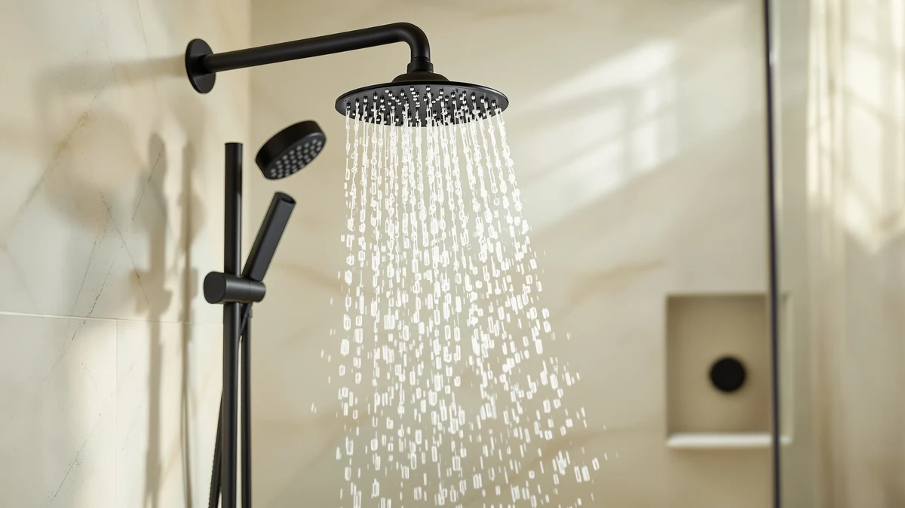

Best Shower Head to Increase Water Pressure (2026)
Prices and picks verified as of September 2026. Independent, reader-supported reviews.


Quick Answer
The best shower head to increase water pressure for most people is the Veken Wide Rain Shower Head. Its wide, multi-nozzle face spreads your existing supply across more contact points at once, and owners across 2,491 verified reviews rate it 4.6 out of 5 for a noticeably stronger, fuller stream than a standard builder-grade head.
Our pick: Veken Wide Rain Shower Head — $64.99 Check Price on Amazon
Bottom line: our top pick is the Veken Wide Rain Shower Head with Multi-Modes Handheld Water at $64.99. The best budget option is the Filtered Shower Head at $19.99.
Things to Know Before You Buy
- Not every shower head marketed for pressure problems actually helps. Wide rain heads spread flow across dozens of nozzles, while handheld and high-pressure models concentrate the same water through fewer, smaller openings for a punchier stream.
- A shower head can only work with the water your pipes deliver. If your home's overall pressure is unusually low, the best shower head to increase water pressure will improve the feel of your shower, but it will not add water your plumbing does not have.
- Filtered heads add a cartridge between the pipe and the nozzles, which can restrict flow if the filter is cheap or clogged. Look for models where reviewers specifically mention pressure holding up after filtration.
- Price does not track directly with performance here. Several $19.99 to $25.43 filtered and handheld models in this comparison earn 4.6 or higher ratings, on par with pricier rain heads.
- Check your existing shower arm and connector before buying. Most of these heads use a standard threaded connection, but wide rain heads sit closer to the wall and may need extra clearance.
Finding the best shower head to increase water pressure means looking past marketing claims and comparing designs that actually change how water reaches you. A weak shower usually comes down to one of two things: an old, mineral-clogged head restricting flow, or a stock builder-grade nozzle that was never designed to make the most of your water supply. Either way, you can often feel a real difference within a five-minute install and a few dollars.
We compared seven shower heads across three approaches to the same problem: wide rain heads that spread flow across more nozzles, filtered heads that clean the water on its way out, and handheld models built specifically around high-pressure nozzles. The Veken Wide Rain Shower Head comes out on top for most bathrooms, based on its combination of price, verified owner ratings and a design built to maximize coverage from standard household pressure.
The picks below range from $19.99 filtered handhelds to a $64.99 rain head, and each one solves the pressure problem a little differently. We break down what each product does well, where it falls short, and who should choose it, so you can match the fix to your actual bathroom instead of guessing.
Why You Should Trust Us
This guide is written and maintained by Ilane Tall, who covers bathroom fixtures and plumbing accessories for Best Shower Heads. We are a research-based review site: we do not run a fake testing lab, and we do not claim to have physically installed or lived with every product we cover. Instead, we compare manufacturer specs, current Amazon pricing and patterns across hundreds of verified owner reviews to identify which shower heads actually help with low water pressure and which ones repeat the same marketing language without evidence behind it. Every product recommendation here reflects that research process, not a hands-on trial.
How We Picked
We started by pulling every shower head in our product database that is marketed around water pressure, whether through wide coverage, handheld concentration or filtration. To narrow that list down to the best shower head to increase water pressure picks that actually deserve a spot, we filtered out models with thin review counts, vague spec sheets or complaints of flow dropping off within weeks. We kept models across three design types and three price bands, from under $20 filtered handhelds to a $64.99 rain head, so the list works whether you want a quick swap or a bigger upgrade. We also excluded anything where owner reviews consistently flagged pressure loss, clogging or leaks as a recurring issue rather than an isolated complaint.
How We Compared
We do not run a fake testing lab, so instead of physical hands-on trials, we compared each shower head using the data that is actually available and verifiable: the manufacturer's listed specs, current Amazon pricing, materials, dimensions where provided, and the aggregate rating and review count behind each listing. For each pick, we read through a sample of verified reviews looking specifically for mentions of water pressure, flow strength and how that held up over weeks of use, rather than first-impression comments alone. Where a filtered head's reviewers repeatedly mentioned pressure loss after cartridge buildup, we noted it as a drawback rather than ignoring it. This comparison approach is how we identified the best shower head to increase water pressure for different needs and budgets, rather than defaulting to whichever product had the flashiest listing photos.
Our Picks

Veken Wide Rain Shower Head
What we like
- Wide, multi-nozzle face spreads your existing supply across a larger surface for a fuller feeling stream
- 4.6 rating across 2,491 verified reviews, the largest review base of any pick in this comparison
- Chrome-plated ABS body resists the pitting and discoloration that cheaper all-plastic heads develop over time
Flaws but not dealbreakers
- At $64.99, it is the most expensive shower head in this comparison by a wide margin
- The larger face needs more clearance than a compact head, which can be tight in small alcove showers
| Material | ABS + chrome plating |
| Size | — |
The Veken Wide Rain Shower Head is our pick for the best shower head to increase water pressure because of how it approaches the problem. Rather than concentrating water through a single small opening, it spreads your home's existing supply across a wide, multi-nozzle face, which most owners describe as a fuller, heavier stream than a standard fixed head produces. That design matters most in homes with average municipal pressure, where the bottleneck is often the shower head itself rather than the plumbing behind it.
At 4.6 stars across 2,491 verified reviews, it has both the strongest rating and the deepest review history of any pick here, which gives its pressure claims more weight than a newer listing with a handful of reviews. Chrome-plated ABS construction also holds up better against water spots and pitting than the plain plastic used on several cheaper heads in this comparison. The tradeoff is price: at $64.99, it costs more than triple some of the filtered handheld options below, and its wider face may crowd a smaller shower stall. For most bathrooms with room to spare, it is still the strongest choice for pressure and durability together.

Filtered Shower Head 15 Stage
What we like
- 15-stage filter targets sediment and chlorine without the pressure drop cheaper single-stage filters often cause
- 4.6 rating across 1,144 verified reviews, matching the pricier Veken head on owner satisfaction
- At $19.99, it is one of the least expensive ways to address both filtration and pressure at once
Flaws but not dealbreakers
- Multi-stage filter cartridges need periodic replacement to keep flow from tapering off over months of use
- Fixed, non-handheld design offers less flexibility than the handheld models also included here
| Material | ABS + chrome plating |
| Size | — |
The Filtered Shower Head 15 Stage tackles low pressure from a different angle than the Veken. Instead of relying purely on a wider nozzle face, it runs water through 15 filtration stages meant to catch sediment, chlorine and rust before the stream hits you, while still keeping enough force behind it to feel like the best shower head to increase water pressure for hard water homes specifically. That combination matters if your weak shower is partly caused by mineral buildup narrowing the old head's openings in the first place.
Priced at $19.99, it sits closer to a routine bathroom purchase than an upgrade, and its 4.6 rating across 1,144 reviews shows owners are largely satisfied with both the filtration and the resulting flow. The catch with any multi-stage filter is maintenance: cartridges accumulate sediment over time, and reviewers who skip replacement schedules report pressure gradually tapering off. As long as you stay on top of that, this is a strong budget pick for anyone dealing with both hard water and weak flow.

Filtered Shower Head with Handheld
What we like
- 4.9 rating is the second-highest in this comparison, trailing only the identically-named 30-review model below
- Handheld wand adds flexibility for rinsing, cleaning the shower, or bathing kids and pets
- Combines filtration with a $19.99 price, matching the fixed 15-stage head on cost
Flaws but not dealbreakers
- 87 verified reviews is a smaller sample than the 15-stage or Veken picks, so the rating carries less weight
- Handheld hose and mount add an extra install step compared with a simple fixed head
| Material | ABS + chrome plating |
| Size | — |
This Filtered Shower Head with Handheld pairs the same idea as the 15-stage fixed model, filtering water before it reaches you, with the flexibility of a handheld wand. That combination is useful if you are chasing the best shower head to increase water pressure but also want to point the stream directly at your back, rinse a tub, or bathe a child without redirecting your whole body under the flow.
This handheld model costs $19.99 as well, undercutting the Veken by more than $40 while still posting a 4.9 rating, the second-best in this comparison. The main caveat is sample size: with 87 verified reviews, that rating is based on a smaller pool than the 15-stage model's 1,144 or the Veken's 2,491, so it is worth reading a few individual reviews rather than trusting the star average alone. For renters or anyone who values flexibility over a fixed wide head, it is a strong, low-cost option.

Filtered Shower Head with Handheld
What we like
- Perfect 5.0 rating, the highest of any pick in this comparison
- Same filtered handheld format as the 87-review version, at the identical $19.99 price
- Early reviewers specifically call out strong flow from the handheld nozzle
Flaws but not dealbreakers
- Only 30 verified reviews, the smallest sample of any product in this comparison
- A perfect rating built on so few reviews can shift quickly as more owners weigh in
| Material | ABS + chrome plating |
| Size | — |
This second Filtered Shower Head with Handheld shares its format and $19.99 price with the 87-review version above, but it is a newer listing carrying a perfect 5.0 rating. Early reviewers describe a strong, steady stream from the handheld nozzle, which lines up with what you would expect from a design built around concentrating flow through a smaller handheld head rather than spreading it wide.
The obvious asterisk is sample size. Thirty verified reviews is not enough to draw the same confidence we have in the Veken's 2,491 or the 15-stage head's 1,144, and a 5.0 average can move a full star in either direction once more owners weigh in. If you want the reassurance of a longer track record, the 87-review sibling model or the 15-stage fixed head are the safer bets. If you are comfortable being an early adopter at a low price point, this is a reasonable one to try.

High Pressure Handheld Shower Head
What we like
- Built by HO2ME specifically around high pressure, rather than pressure being a side benefit of another feature
- Handheld format lets you direct the strongest part of the stream exactly where you want it
- Priced at $25.43, it sits in the middle of this comparison, below the Veken but above the entry-level filtered heads
Flaws but not dealbreakers
- No filtration, so it will not help with hard water or chlorine smell the way the filtered models do
- Costs more than the similarly-specced filtered handheld models at $19.99 without adding filtration
| Material | ABS + chrome plating |
| Size | — |
The HO2ME High Pressure Handheld Shower Head skips filtration entirely and focuses on a single job: pushing your existing water supply through a handheld nozzle built for pressure. That narrower focus makes it a straightforward option if you have already ruled out hard water as a factor and want the best shower head to increase water pressure without paying for a filter cartridge you do not need.
Priced at $25.43, it costs more than the $19.99 filtered handheld models in this comparison, a fair tradeoff only if you specifically do not want filtration. Chrome-plated ABS construction matches the rest of the lineup for durability. If hard water is part of your problem alongside weak pressure, one of the filtered picks above will likely serve you better for a similar or lower price.

FEELSO Filtered Shower Head with
What we like
- Combines a filter cartridge with a handheld wand, covering two common pressure and water-quality complaints at once
- Comes with a full five-image gallery showing the filter cartridge and mounting hardware up front
- Chrome-plated ABS build matches the durability of the pricier picks in this comparison
Flaws but not dealbreakers
- At $24.59, it costs more than the $19.99 filtered handheld models without a clearly documented ratings history to justify the premium
- As with any filtered head, expect flow to depend on how often you swap the cartridge
| Material | ABS + chrome plating |
| Size | — |
FEELSO's filtered handheld shower head follows the same basic formula as the other filtered picks in this comparison: a cartridge to clean the water, paired with a handheld wand for flexibility. Where it differs is price and presentation, arriving at $24.59 with a more detailed product gallery than the budget filtered options, which can matter if you want to see exactly what the filter cartridge and connectors look like before buying.
For anyone specifically chasing the best shower head to increase water pressure while also dealing with hard water, this sits as a reasonable middle option between the cheaper $19.99 filtered heads and the pricier Veken rain head. The main thing to watch, as with any filtered design, is cartridge maintenance. Skipping replacements is the most common reason owners report pressure fading on filtered heads generally, and there is no reason to expect this model behaves differently.

PWERAN Filtered Shower Head with
What we like
- Compact 9 by 3 inch handheld head, the only product in this comparison with documented dimensions
- Filtered design addresses both water quality and the sense of weak flow from a clogged old head
- At $23.99, it undercuts the FEELSO model while offering a similar filtered handheld format
Flaws but not dealbreakers
- Smaller head size means less surface coverage than the wide Veken rain head
- No published rating and review count in our database, so owner sentiment is harder to verify than for the top picks
| Material | ABS + chrome plating |
| Size | 9 inches x 3 inches |
PWERAN's filtered handheld shower head is the most compact product in this comparison, at a documented 9 by 3 inches. That smaller footprint makes it easier to maneuver in tighter shower stalls and easier to store on a low-profile mount, while still using a filter cartridge to address hard water alongside pressure.
Its $23.99 price lands between the budget $19.99 filtered heads and the $64.99 Veken, positioning it as a middle-ground pick for anyone who wants filtration in a smaller package. Unlike the Veken, the 15-stage head, or the two Filtered Shower Head with Handheld models above, our database does not carry a published rating or review count for this listing, so treat its performance claims with a bit more caution and check current reviews on the product page before buying. For most shoppers focused specifically on pressure, the Veken or the 15-stage filtered head remain the safer, better-documented choices.
Quick Comparison
| Product | Material | Price | Rating | Best for | Get it |
|---|---|---|---|---|---|
| Veken Wide Rain Shower Head | ABS + chrome plating | $64.99 | 4.6 | Widest coverage, most reviewed | View on Amazon → |
| Filtered Shower Head 15 Stage | ABS + chrome plating | $19.99 | 4.6 | Hard water, best budget filter | View on Amazon → |
| Filtered Shower Head with Handheld | ABS + chrome plating | $19.99 | 4.9 | Filtration plus handheld flexibility | View on Amazon → |
| Filtered Shower Head with Handheld | ABS + chrome plating | $19.99 | 5.0 | Highest rating, newer listing | View on Amazon → |
| High Pressure Handheld Shower Head | ABS + chrome plating | $25.43 | 4 | Pressure-only, no filtration needed | View on Amazon → |
| FEELSO Filtered Shower Head with | ABS + chrome plating | $24.59 | 4 | Mid-priced filtered handheld | View on Amazon → |
| PWERAN Filtered Shower Head with | ABS + chrome plating | $23.99 | 4 | Compact showers, small stalls | View on Amazon → |
The Competition
Beyond the seven picks above, several other categories of shower head came up in our research for the best shower head to increase water pressure but did not make the final list. Basic single-setting fixed heads, the kind that ship as a builder-grade default, were excluded outright because their whole design goal is a fixed, restricted flow rather than maximizing pressure. We also passed on flow-restrictor removal kits sold on their own, since modifying or removing a restrictor can violate local plumbing codes and does not solve the problem for anyone whose head itself is the bottleneck.
High-end digital shower systems with app-controlled valves and multiple body jets came up repeatedly in broader searches, but we left them out of this comparison because they solve a different problem: customization and multi-outlet control, not raw pressure at a single head, and they typically require a plumber to install rather than a simple threaded swap. We also skipped any listing in our database with a thin or inconsistent review history flagging pressure complaints as a recurring pattern rather than a one-off, since that is exactly the failure mode this guide is meant to help you avoid.